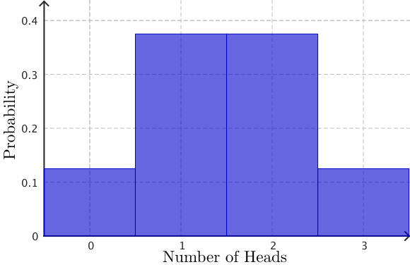
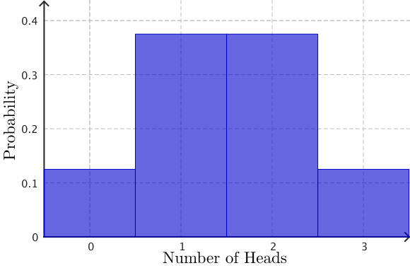

Linear Algebra
&
Engineering Mathematics 1
Week 8 - Probability II
Quick recap of terminology
- Experimental probability (🎲🪙🔍👀 ➡️ 📊📈)
- Theoretical probability
- Sample space & Event: Event = $A,\;$ Probability of $A:$ $P(A)$
- Mutually exclusive events: $P(A \text{ or } B)= P(A) + P(B)$
- Not mutually exclusive: $P(A \text{ or } B)= P(A) + P(B) - P(A \text{ and }B)$
- Complementary events: $P(A)+P(A')=1$
- Independent & Not independent events
- Conditional probability: $P(B|A) = \dfrac{P(A\text{ and }B)}{ P(A)}\,$ & $\,P(A|B) = \dfrac{P(A\text{ and }B)}{ P(B)}$
Quick recap of terminology
- Combinatorics
- Permutations of $n$ distinct objects (every object is used, the order matters): $$n!$$
- Permutations of selecting $r$ things from $n$ distinct objects (order matters): $$^nP_r = \dfrac{n}{(n-r)!}$$
- Combinations of selecting $r$ things from $n$ objects (order does not matter): $$^nC_r=\frac{^nP_r}{r!} = \frac{n!}{r!(n-r)!} $$
A couple of applications of conditional probability
| Medical Diagnosis | Weather Forecasting |
|---|---|
|
What is the probability that the
person actually has a
disease given a positive test result?
😀🤪😷😉🤒🤠🤧😋 |
Meteorologists use past data 📊📈 to update
rain probabilities
based on current conditions
like humidity, cloud cover, or wind direction. 🌧️🌤️☀️🌦️⛈️ |
Problem: Medical Diagnosis
Scenario: A patient receives a positive result on a test for a rare disease 😷.
Let's say the disease affects 1 in 1,000 people (0.1%), and the test is 99% accurate (i.e., 99% true positive rate and 1% false positive rate).
Question: What is the probability that the person actually has the disease given a positive test result?
Problem: Medical Diagnosis
Scenario: A patient receives a positive result on a test for a rare disease 😷.
Let's say the disease affects 1 in 1,000 people (0.1%), and the test is 99% accurate (i.e., 99% true positive rate and 1% false positive rate).
Question: What is the probability that the person actually has the disease given a positive test result?
Problem: Medical Diagnosis
Scenario: A patient receives a positive result on a test for a rare disease 😷.
Let's say the disease affects 1 in 1,000 people (0.1%), and the test is 99% accurate (i.e., 99% true positive rate and 1% false positive rate).
Question: What is the probability that the person actually has the disease given a positive test result?
Remark: We used the formula:
\(P(D|+ ) = \dfrac{P(D \text{ and } +)}{P(D \text{ and } +) + P(D'\text{ and }+)}\)
\(= \dfrac{P(+|D) \cdot P(D)}{P(+)}\quad\)
Replace $D$ for $B$ and $+$ for $A:$
\(P(B|A)= \dfrac{P(A|B) \cdot P(A)}{P(B)}\)
Bayes' Theorem
\(P(B|A)= \dfrac{P(A|B) \cdot P(A)}{P(B)}\)
Thomas Bayes (1701-1761) english statistician and philosopher.
Multiply applications in science:
Medical Diagnosis, Machine Learning, Spam Filtering,
Forensic Science, Weather Forecasting.
Monty Hall Game
What is the probability of winning, if you keep your first choice?
What is the probability of winning, if you switch doors?
Monty Hall Game

Probability distributions
Consider tossing 3 coins 🪙: We are interested in the number of heads.
\[ \big\{\text{TTT, TTH, THT, HTT, THH, HTH, HHT, HHH}\big\} \]
| Number of Heads ($k$) | 0 | 1 | 2 | 3 |
| $P(X=k)$ | $\frac{1}{8}$ | $\frac{3}{8}$ | $\frac{3}{8}$ | $\frac{1}{8}$ |
Probability distributions
 

| Number of Heads ($k$) | 0 | 1 | 2 | 3 |
| $P(X=k)$ | $\frac{1}{8}$ | $\frac{3}{8}$ | $\frac{3}{8}$ | $\frac{1}{8}$ |
Probability distributions
| Number of Heads ($k$) | 0 | 1 | 2 | 3 | 4 | 5 |
| $P(X=k)$ | $\frac{1}{32}$ | $\frac{5}{32}$ | $\frac{10}{32}$ | $\frac{10}{32}$ | $\frac{5}{32}$ | $\frac{1}{32}$ |
Probability distributions
|
Tossing 200 coins |
|
Binomial Distribution
$P(X=k)$ $=$ $^nC_k $ $p^k$ $(1-p)^{n-k}$